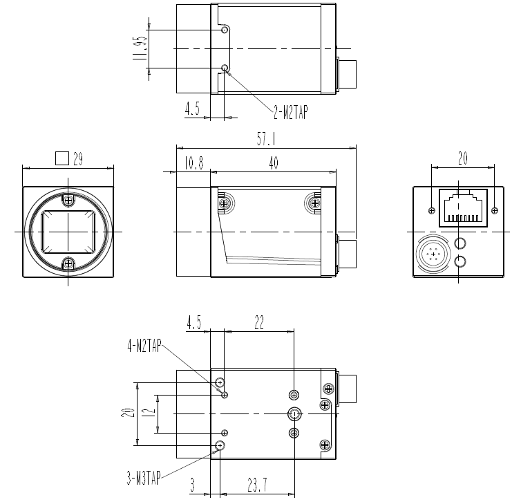
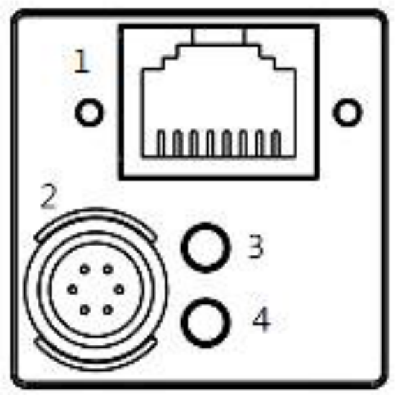
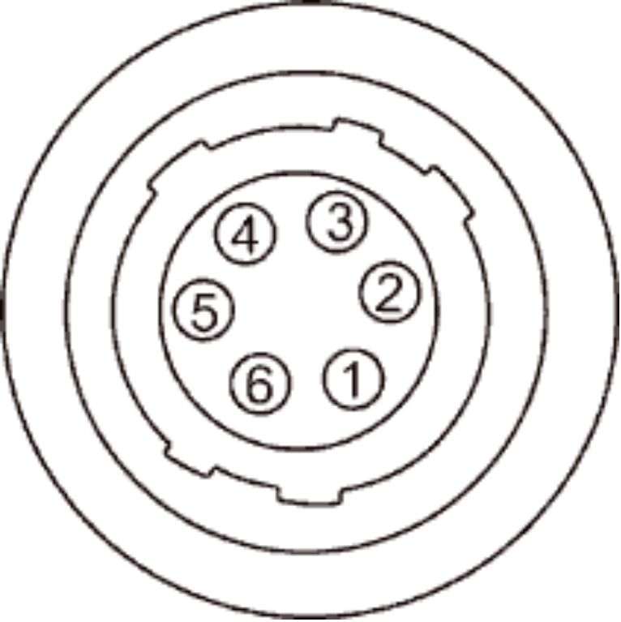

High Performance GigE Vision Camera
MG-A121M/K-FL
Sony CMOS Pregius S IMX548 | 12.4 MP | Global Shutter

1. Product Overview
The MG-A121M/K-FL is a professional-grade industrial camera featuring the high-resolution **Sony® Pregius S IMX548** global shutter sensor. Delivering **12.4 megapixel** (4096 x 3000) resolution at **9.2 fps** via a standard Gigabit Ethernet interface, it is optimized for precision-driven applications. Its compact form factor and advanced sensor technology make it ideal for high-accuracy PCB inspection, 3D measurements, and pharmaceutical packaging verification.
2. Key Features
Pregius S Sensor Technology
Utilizes the IMX548 sensor with a back-illuminated structure, providing high quantum efficiency and low noise in a compact 1/1.8" format.
GigE Vision & GenICam
Fully compliant with industrial standards, ensuring seamless plug-and-play compatibility with a wide range of inspection software.
Integrated PoE Support
Power over Ethernet (PoE) functionality reduces wiring complexity and simplifies installation in constrained industrial environments.
Rugged Industrial Design
The 29 x 29 x 40 mm aluminum housing provides excellent heat dissipation and high durability for long-term stability on production lines.
3. Mechanical Dimensions

Figure 1. Mechanical Outline (Unit: 29 x 29 x 40 mm)
4. Interface & Pin Map
4.1 Back Panel Layout

Camera Back Panel
| NO. | Name | Remark |
|---|---|---|
| 1 | Gigabit Ethernet Connector | RJ45 with PoE |
| 2 | Power & External I/O | 6-Pin Circular Connector |
| 3, 4 | Status LED Indicators | Link/Active Status |
4.2 6-Pin Circular Connector Pin Assignment

6-Pin Connector
| No. | Name | I/O | Description |
|---|---|---|---|
| 1 | DC VCC | IN | +12V DC (±10%) |
| 2 | TRIGGER+ | IN | Opto-Isolated Input |
| 3 | STROBE- | OUT | Common Ground (Out) |
| 4 | STROBE+ | OUT | Opto-Isolated Output |
| 5 | TRIGGER- | IN | Common Ground (In) |
| 6 | DC GND | IN | Power Ground |
5. Specifications
5.1 General Specifications
| Parameter | MG-A121M-FL (Mono) | MG-A121K-FL (Color) |
|---|---|---|
| Sensor Model | Sony CMOS Pregius S IMX548 | |
| Sensor Size / Shutter | 1/1.8" / Global Shutter | |
| Resolution | 4096 x 3000 (12.4 MP) | |
| Pixel Size | 2.74 µm x 2.74 µm | |
| Frame Rate (Max.) | 9.2 fps | |
| Scanning Method | Full / ROI / Reverse / Decimation / Binning | |
| Pixel Data Format | Mono 8/10/12 | Bayer RG 8/10/12 |
5.2 Electrical & Environmental
| Interface | Ethernet 1000 Base-T (GigE Vision Standard) | |
|---|---|---|
| Power Supply | 12VDC ± 10% or PoE | |
| Power Consumption | DC : < 3.5 W / PoE : < 4.0 W | |
| Dimension / Weight | 29 x 29 x 40 mm / Weight < 65 g | |
| Operating Temp. | 0°C ~ +50°C (at housing) | |
| Standard Compliance | CE, FCC, RoHS, WEEE, UL | |
| IP rating | IP30 | |
6. Warranty
3-Year Premium Warranty:
Crevis warrants the MG-A121M/K-FL for a period of 3 years, ensuring long-term reliability for demanding industrial production lines.